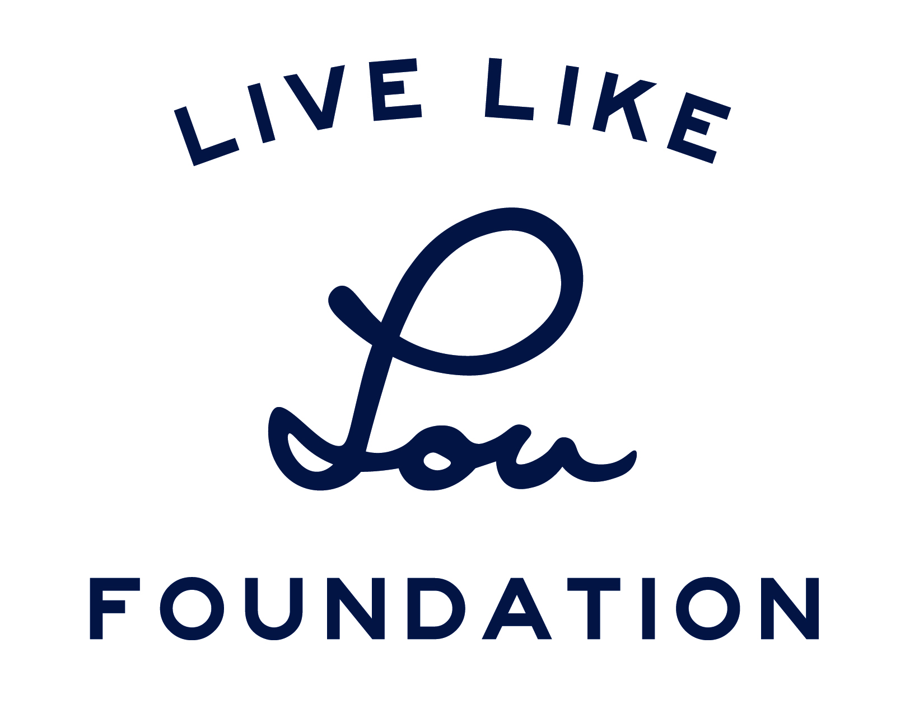

The LiveLikeLou Foundation is a philanthropic organization created by the Phi Delta Fraternity, which I am a part of at Texas A&M. The foundation follows the life of Lou Gehrig, a member of the Phi Delta Theta fraternity and a baseball player for the New York Yankees. In 1939, Lou Gehrig was unable to continue playing baseball as he had developed the then undiagnosed disease that had atrophied his muscles and left him unable to play, Amyotrophic Lateral Sclerosis (ALS). Lou died 2 years later from the disease, and his death brought great attention to the very unknown disease at the time. Now, the disease is commonly referred to as Lou Gehrig's disease, and that is the main focus of the foundation. In November of 2017, The Phi Delta Theta International Fraternity announced the launch of the LiveLikeLou Foundation, which is a non-profit organization dedicated to spreading awareness and increasing funding for ALS research. Every year, Phi Delta Theta chapters all across the nation raise money for the LiveLikeLou Foundation in an effort to bring awareness to the disease as well as honor our deceased brother.
The Phi Delta Theta fraternity at Texas A&M holds philanthropic events each semester in order to raise money for the LiveLikeLou foundation. I am honored to be a part of these events as it not only honors our brother, but helps everybody who currently has Lou Gehrig's Disease. Whether these events are food eating contests or competitions of some sort, they all work to bring the community together and spread awareness of the disease, while also raising money through donations during the events. The money that we raise at these events go directly to the LiveLikeLou Foundation, who in turn use the money to spread awareness and help fund research for the disease. We do all this so that we can "Leave ALS Better Than [We] Found It."